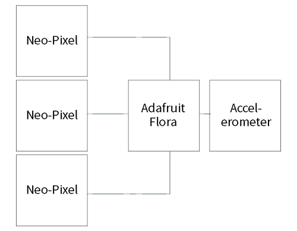
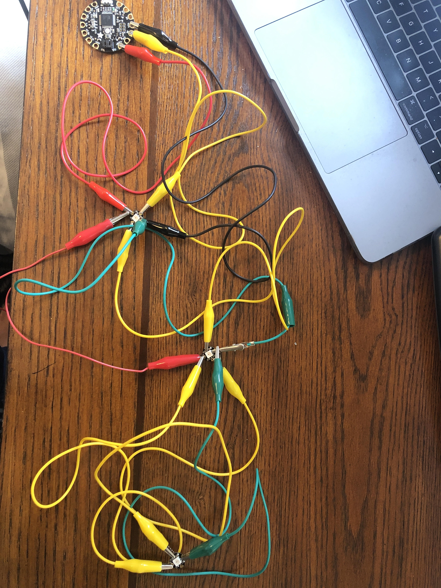
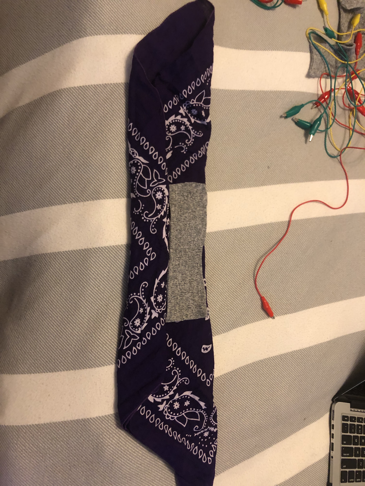
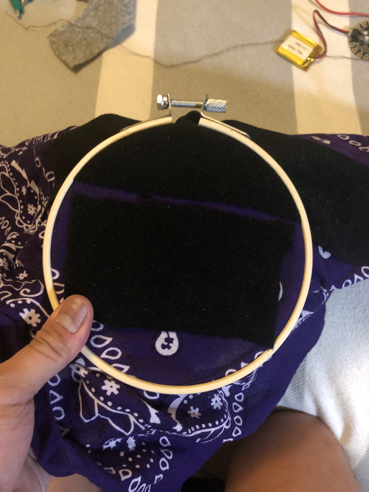
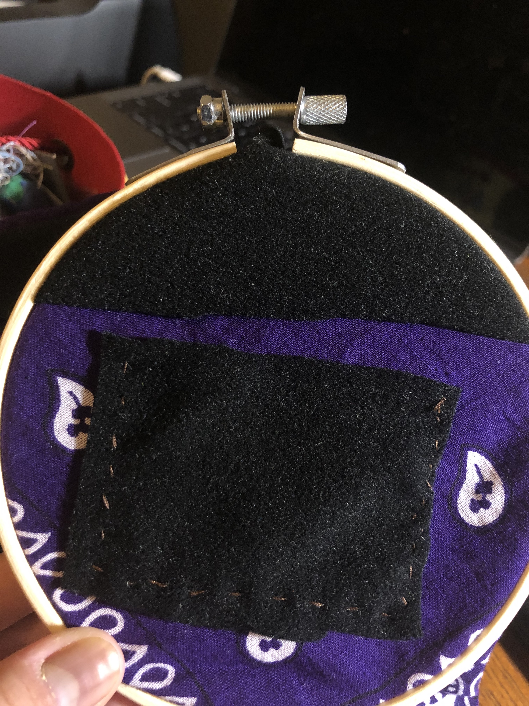
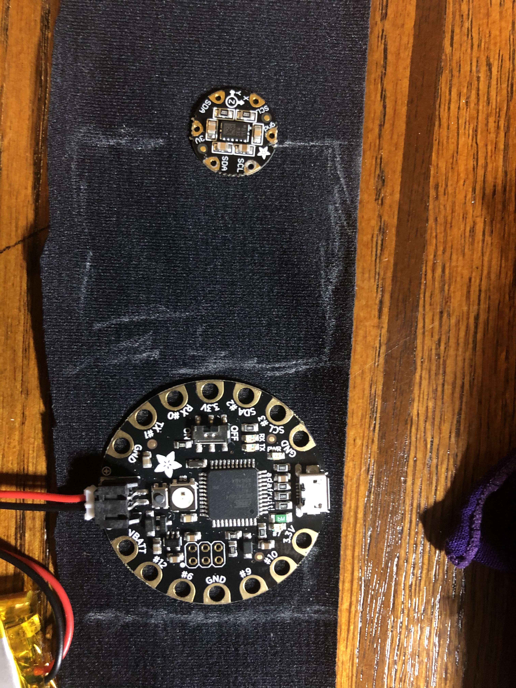
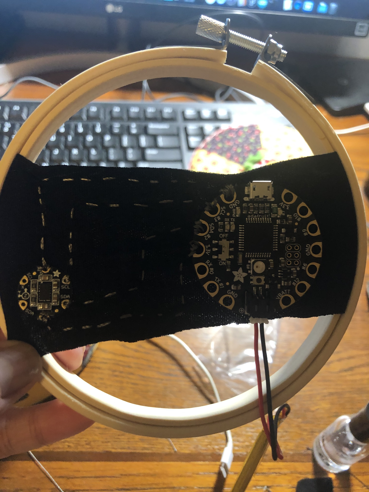

Intro to Wearables: A Spring 2020 Blog
Leonard Santos
Final Project
Assignment
Due: May 5, 2020 -
Final project!
Brainstorming
Now that I'm in quarantine, it's difficult to workout or stay active since I can't leave my home. Additionally, now that I can't get a haircut, I've had to resort to wearing bandanas most of the time to keep my hair out of my face.
I've decided to combine my new knowledge of wearable technology with my bandanas and home workout routine to create something I can wear that shows my workout progress.
This will be done by combining an Adafruit Flora board with an accelerometer and three Neo-Pixels that will all light up the more you move while wearing the bandana!
Block Schematic
Process
I first began my process by testing out the lights of my NeoPixels. I took two of them and made them show different colors at different times. I was able to do this and toggle the two lights to turn on and off again in red and blue.
I added a third NeoPixel to complete the set.
And then, I changed the code in order to also include the third NeoPixel to turn green when the others are off.
Finally, in order to make it appear like a loading screen, I changed it so that the previously lit NeoPixels will just change color instead of turning off in order to show a loading screen.
Next, I moved onto working on the bandana itself.
I started with the battery pouch where my lithium battery would be held. I sewed it in underneath where the Flora board would be located.
 Then, I worked on sewing in the Adafruit Flora board and acclerometer onto a strap to later put onto the bandana. To make sure that it would make sense, I plotted out where the lines would go with chalk before sewing it in.
 I coded in more instructions so that moving the accelerometer would trigger a different reaction from the boolean (LIGHT 1, LIGHT 2, LIGHT 3, NO LIGHT) depending on how long it would move (moveCount).